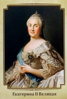

Владимир Святославич

Екатерина II (урожденная София Ангальт-Цербстская; 2 мая 1729 – 17 ноября 1796), наиболее известная как Екатерина Великая, была последней правящей императрицей России (с 1762 по 1796 год) и самой продолжительной женщиной-лидером страны. Она пришла к власти после свержения своего мужа и троюродного брата Петра III.